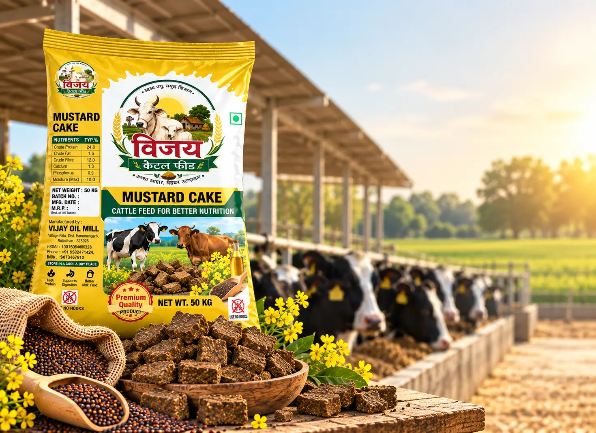
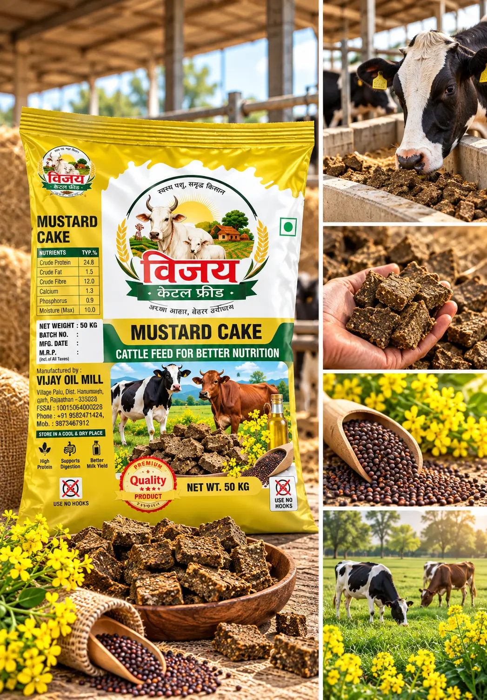
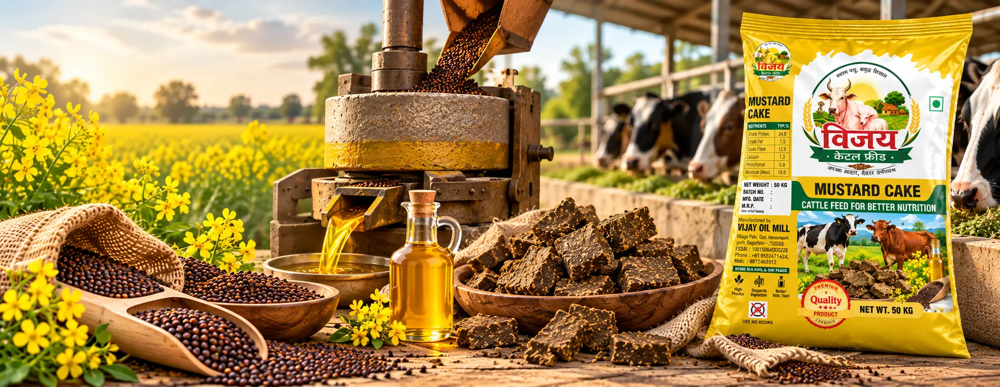
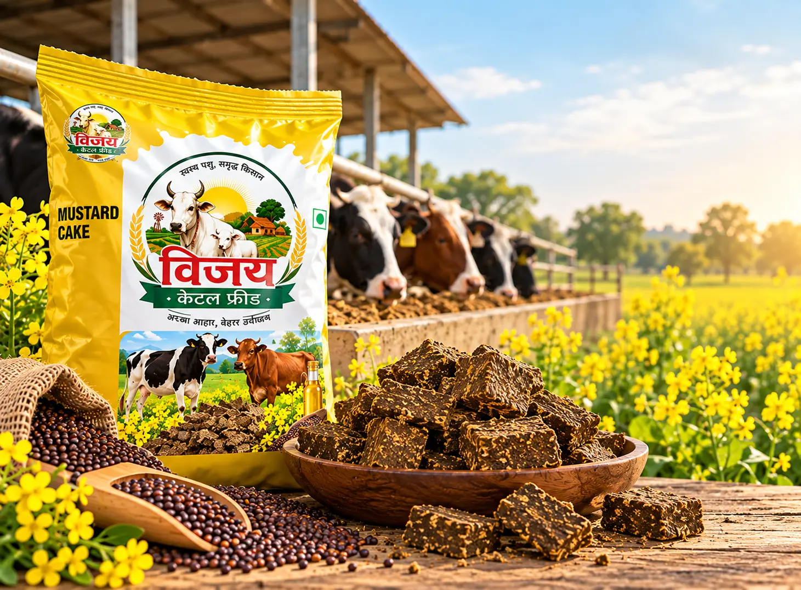
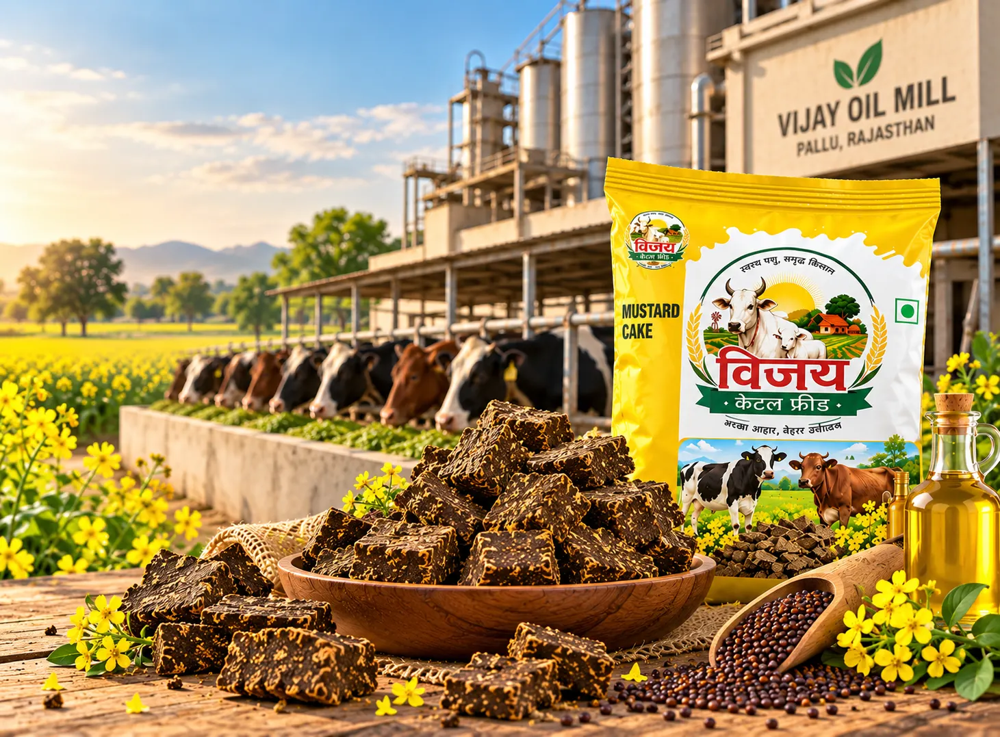

Made Around Mustard
Mustard is an important part of Vijay Oil Mill's product portfolio. Along with mustard oil, mustard processing also produces mustard cake, giving this agricultural crop an important role within cattle feeding.
Vijay Mustard Cake is positioned as a practical mustard-based product for livestock farmers. Its connection with our mustard processing operations allows it to sit naturally alongside our wider range of agricultural and cattle feed products.
From sourcing and processing to packaging, our focus is on maintaining a clearly defined product that farmers and dealers can easily identify within the Vijay range.
 A mustard-based cattle feed product connected directly with our mustard processing
operations.
A mustard-based cattle feed product connected directly with our mustard processing
operations.
What Defines Vijay Mustard Cake
Mustard-Based Product
Vijay Mustard Cake originates from mustard processing, connecting the product directly with one of the key agricultural crops associated with Vijay Oil Mill.
Part of Cattle Feeding
The product is intended for cattle-feeding applications and provides farmers with a mustard-based option within their overall livestock feeding practices.
Connected to Mustard Processing
Mustard cake is obtained as part of the mustard oil extraction process, allowing an important agricultural raw material to continue serving a practical purpose after oil extraction.
Practical Farm Product
Its familiar form and agricultural origin make mustard cake a practical product for farmers looking for mustard-based material for cattle feeding.
Part of the Vijay Product Range
Vijay Mustard Cake forms part of Vijay Oil Mill's broader product portfolio, alongside mustard oil and our range of cattle feed products.

From Mustard Seeds to Mustard Cake
Mustard cake begins with the same agricultural crop that forms the foundation of our mustard oil operations. After mustard seeds are processed for oil extraction, the remaining mustard material becomes mustard cake for its intended agricultural and cattle-feeding use.
Mustard Seeds
Mustard Seeds
Mustard Processing
The mustard seeds move through the oil extraction and processing stage at the production facility.
Mustard Cake
Following oil extraction, mustard cake is obtained as a separate mustard-based product.
Packaging & Distribution
The finished product is prepared and packaged for distribution to dealers, farmers and other customers.


A Practical Mustard-Based Feed Choice
For livestock farmers, choosing clearly identified feed products is an important part of everyday animal management. Vijay Mustard Cake provides a mustard-based option that can be incorporated into appropriate cattle-feeding practices.
Its agricultural origin and connection with mustard processing make it a familiar product within farming environments. Vijay Oil Mill brings this product into a defined packaged range, making it easier for farmers and dealers to identify, handle and source.
The appropriate quantity and method of use should be determined according to the animal's overall diet and nutritional requirements.
Our Focus on Consistent Mustard Cake
At Vijay Oil Mill, mustard processing forms an important part of our operations. Our focus for Vijay Mustard Cake is on maintaining a clearly identified product through appropriate processing, handling and packaging.
From mustard processing through to the finished packaged product, attention is given to maintaining consistency across the product journey. Clear packaging also helps farmers and dealers distinguish Vijay Mustard Cake from other products within our range.
As with our wider agricultural and cattle feed portfolio, our aim is to provide a dependable product range supported by an established local manufacturing operation in Pallu, Rajasthan.


Let's Grow Together
Interested in our products or looking for a dealership opportunity?
Contact Vijay Oil Mill